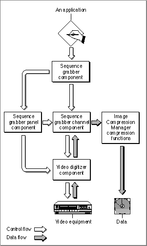

Capturing Sequences of Images
Figure 1-2 shows the QuickTime components that allow your application to capture image data for storage or for further processing by video equipment.Figure 1-2 QuickTime components for image capture
- Your application calls the sequence grabber component to digitize data. Sequence grabber components allow applications to obtain digitized data from sources that are external to a Macintosh computer. For more information on how to use these components to acquire images, read the chapter "Sequence Grabber Components" in this book.
- The sequence grabber component uses both sequence grabber panel components and sequence grabber channel components.
- The sequence grabber panel component obtains configuration information before it calls the sequence grabber channel component to manipulate the captured data. For details on creating sequence grabber panel components, see the chapter "Sequence Grabber Panel Components" in this book.
- The sequence grabber channel component manipulates the captured data. For details on sequence grabber channel components, see the chapter "Sequence Grabber Channel Components" in this book.
- Image compressor components are used by the sequence grabber channel component, if necessary.
- The sequence grabber channel component calls either a video digitizer component or the Image Compression Manager.
- The video digitizer component obtains the digitized data from an analog video source. To understand how to use or create a video digitizer component, see the chapter "Video Digitizer Components" in this book.
- The Image Compression Manager's compression functions store the image in a storage media--for example, in a data pack.
